14주차 — System-2 LLM Planner 설계¶
학습목표
Spot+ATS 보안 로봇의 두뇌(System-2) 를 직접 설계한다. 운영자의 모호한 자연어 명령을 검증된 고수준 계획(HighLevelPlan) 으로 변환하는 LLM 플래너를, 규칙 정의(models.py) → 지능 생성(llm_planner.py) → 통신·관리(system2_node.py) 의 세 축으로 구현한다. 다음 주(15주차)에서 이 System-2를 System-1과 연동해 검증할 수 있도록, 데이터 계약·프롬프트 엔지니어링·ROS 2 런타임 통합 의 원리를 익히는 것이 목표다.
출처 (Source)
본 자료의 그림·예제는 교안 「System-2 LLM Planner 설계」(제작: ENGI UNIVERSE) 4강을 바탕으로 재구성하였습니다. 코드는 교안의 설명을 충실히 따른 재구성 예제입니다(원본 소스 비공개).
강의 흐름 (FLOW)
Natural Lang. → LLM Planner → Pydantic → HighLevelPlan → ROS 2 Publish
⏱️ 3시간 구성¶
| 교시 | 시간 | 내용 | 근거 교안 |
|---|---|---|---|
| 1교시 | 50분 | Intro: System-2의 3축 구조 & models.py(데이터 계약·스키마) |
4강 §01~02 |
| 2교시 | 50분 | llm_planner.py: 모델 설정·시스템 프롬프트 4단계·실행 체인 |
4강 §03 |
| 3교시 | 50분 | system2_node.py: ROS 2 런타임 통합 & Wrap-up |
4강 §04~05 |
🧭 0. Intro — System-2란 무엇인가¶
System-2 는 Spot+ATS 프로젝트의 고수준 계획(High Level Plan) 을 수립하는 추론 시스템입니다. 운영자의 자연어 명령과 로봇 상태를 받아 실행 가능한 Plan 으로 변환하고 이를 System-1(로봇 실행 계층)에 전달하는 상위 의사결정 파이프라인입니다.
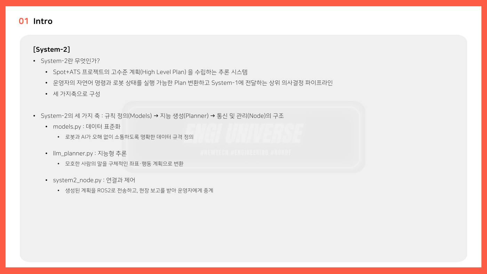
System-2 LLM Planner 설계 — 슬라이드 03 (출처: ENGI UNIVERSE)
System-2는 다음 세 가지 축으로 구성됩니다.
| 축 | 파일 | 역할 | 한 줄 요약 |
|---|---|---|---|
| 규칙 정의 (Models) | models.py |
데이터 표준화 | 로봇과 AI가 오해 없이 소통하도록 데이터 규격 정의 |
| 지능 생성 (Planner) | llm_planner.py |
지능형 추론 | 모호한 사람의 말을 구체적 좌표·행동 계획으로 변환 |
| 통신·관리 (Node) | system2_node.py |
연결과 제어 | 생성된 계획을 ROS 2로 전송, 현장 보고를 운영자에게 중계 |
System-1 / System-2 분리 (다음 주 연동의 전제)
- System-2 (LLM): 자연어 → 고수준 계획 생성 — 추론 계층
- System-1: 계획을 받아 실제 로봇을 제어 — 실행 계층
- 15주차에서는 이번에 만든 System-2가 생성한 플랜을
/system2/plan_cmd로 발행해 System-1과 연동·검증합니다.
🧱 1교시. models.py — LLM과 로봇 사이의 "계약서"¶
models.py 는 System-2의 설계도면(스키마) 역할을 하는 파일로, LLM(자연어) 과 System-1(로봇) 사이의 공통 언어·약속을 코드로 정의합니다.
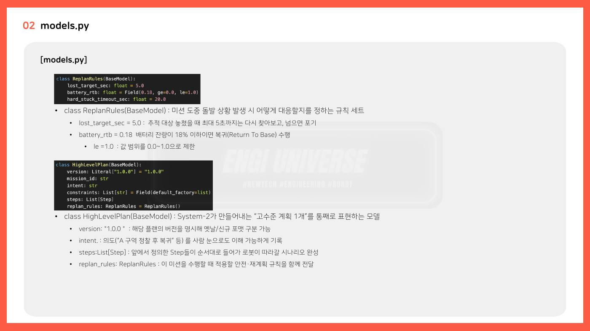
System-2 LLM Planner 설계 — 슬라이드 05 (출처: ENGI UNIVERSE)
typing:List,Dict,Optional,Literal등 타입 힌트 제공pydantic: 데이터가 정한 규칙에 맞는지 검사 → LLM 결과를 사전에 걸러주는 거름망
핵심 모델 4종¶
Step 1 — class Step: 로봇이 수행할 "행동 하나"를 표현
task: 환각(Hallucination) 방지 → 아래 5개 문자열만 인정, 나머지는 에러- 허용 문자열:
move_to,scan,report_and_wait,track,return_to_home
- 허용 문자열:
params: task별로 필요한 데이터가 다르므로 유연하게(Dict) 설정retry: Field(0, ge=0): 재시도 횟수는 0 이상만 허용
Step 2 — class ReplanRules: 미션 도중 돌발 상황 대응 규칙 세트
lost_target_sec = 5.0: 추적 대상을 놓치면 최대 5초 재탐색 후 포기battery_rtb = 0.18: 배터리 잔량 18% 이하면 복귀(Return To Base)le=1.0: 값 범위를 0.0~1.0 으로 제한
Step 3 — class HighLevelPlan: System-2가 만들어내는 "고수준 계획 1개"를 통째로 표현
version: "1.0.0": 포맷 버전 명시(구/신 구분)intent: 미션 의도를 사람이 읽을 수 있게 기록steps: List[Step]: Step들이 순서대로 들어가 시나리오 완성replan_rules: ReplanRules: 적용할 안전·재계획 규칙을 함께 전달
Step 4 — class System1State: 현재 로봇 상태 종합 보고서
mission_id: 수행 중인 미션 식별system1_state: 대기/이동/수행 중 등 전체 상태current_task,step_index: "전체 N단계 중 몇 번째 Step인지" 진척도pose: 로봇의 현재 위치/자세(x, y 등)vision_snapshot.summary: 카메라가 본 상황을 한 줄 요약 → System-2의 판단 근거
from typing import List, Dict, Optional, Literal
from pydantic import BaseModel, Field
class Step(BaseModel):
# 허용된 단위 액션 5가지만 인정 → 나머지는 에러(환각 방지)
task: Literal["move_to", "scan", "report_and_wait", "track", "return_to_home"]
params: Dict = {} # task별 데이터(좌표/각도/대상 등)에 유연 대응
retry: int = Field(0, ge=0) # 재시도 횟수는 0 이상만 허용
class ReplanRules(BaseModel):
lost_target_sec: float = 5.0 # 추적 대상 놓치면 최대 5초 재탐색 후 포기
battery_rtb: float = Field(0.18, ge=0.0, le=1.0) # 배터리 18% 이하면 복귀(RTB)
class HighLevelPlan(BaseModel):
version: str = "1.0.0" # 포맷 버전(구/신 구분)
intent: str # 사람이 읽을 수 있는 미션 의도
steps: List[Step] # 순서대로 실행할 단위 액션 시나리오
replan_rules: ReplanRules = ReplanRules()
class VisionSnapshot(BaseModel):
summary: str = "" # 카메라가 본 상황 한 줄 요약
class System1State(BaseModel):
mission_id: str
system1_state: Literal["idle", "moving", "working"]
current_task: Optional[str] = None
step_index: int = 0 # 전체 N단계 중 몇 번째 Step인지(진척도)
pose: Dict = {} # 로봇 현재 위치/자세(x, y, yaw 등)
vision_snapshot: VisionSnapshot = VisionSnapshot()
models.py 요약
models.py 는 LLM과 로봇 사이의 계약서이자 안전장치입니다. 규격·범위를 벗어난 데이터는 처음부터 통과시키지 않는 구조로, 5종의 task 제한이 환각을 원천 차단합니다.
🧠 2교시. llm_planner.py — 모호한 자연어를 검증된 계획으로¶
llm_planner.py 는 앞에서 정의한 데이터 규격(models.py)을 실제로 사용해 계획을 생성하는 플래너입니다. 3단계 로 구성됩니다.
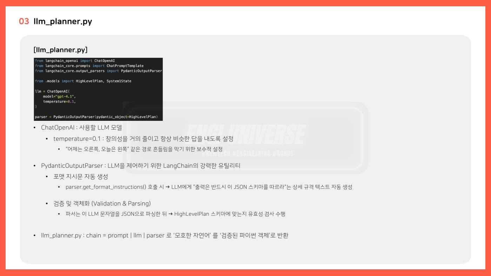
System-2 LLM Planner 설계 — 슬라이드 08 (출처: ENGI UNIVERSE)
| 단계 | 질문 | 구현 |
|---|---|---|
| ① 모델 설정 | 어떤 AI를 쓸 것인가? | ChatOpenAI(temperature=0.1) |
| ② 프롬프트 엔지니어링 | 어떤 역할·정보를 줄 것인가? | 시스템 프롬프트 4단계 구조 |
| ③ 실행 체인 | 입력 → 결과를 어떻게 뽑는가? | chain = prompt \| llm \| parser |
① 모델 설정 & 파서¶
ChatOpenAI: 사용할 LLM 모델temperature=0.1: 창의성을 거의 줄여 항상 비슷한 답을 내도록 설정 → "어제는 오른쪽, 오늘은 왼쪽" 같은 경로 흔들림 방지(보수적 설정)PydanticOutputParser: LLM을 제어하는 LangChain 유틸리티- 포맷 지시문 자동 생성:
parser.get_format_instructions()호출 시 → "출력은 반드시 이 JSON 스키마를 따르라"는 규격 텍스트 자동 생성 - 검증 및 객체화: LLM 문자열을 JSON으로 파싱한 뒤
HighLevelPlan스키마 유효성 검사
- 포맷 지시문 자동 생성:
② 시스템 프롬프트 4단계 구조¶
system_template 은 System-2 LLM에게 역할·능력·제약·출력 형식을 한 번에 주입하는 핵심 프롬프트입니다. LLM의 사고를 통제하기 위해 4단계로 형성합니다.
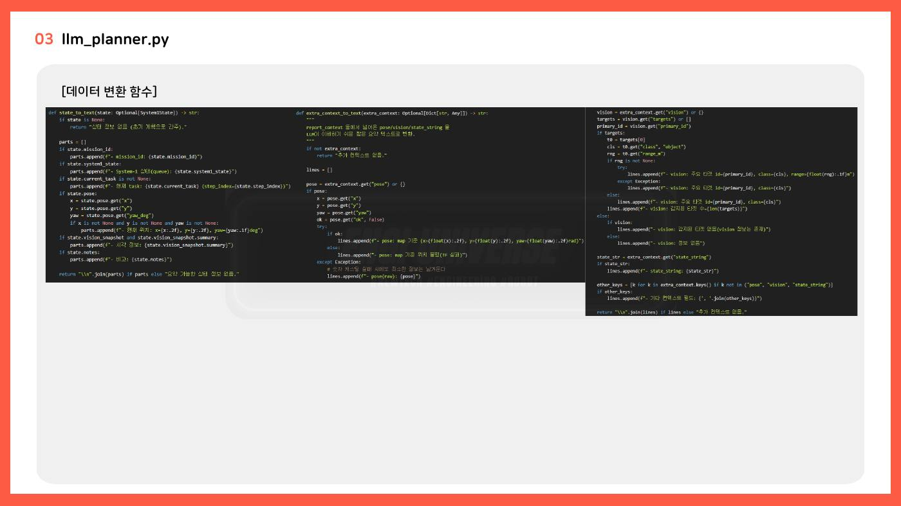
System-2 LLM Planner 설계 — 슬라이드 11 (출처: ENGI UNIVERSE)
- 단위 액션(task) 5가지를 명시
- 로봇이 사용 가능한 함수 목록(API) 을 LLM에 그대로 주입 → 하드웨어 한계를 명시
- 지도 정보를 텍스트(수학 부등식) 로 설명
- 프롬프트에 적힌 공식 예시(구역 중앙 좌표 계산)를 참고해
(x, y)좌표 변환 수행
- AI에게 필요한 상황 판단 기준 설정
- LLM이 단순 명령 변환기가 아닌 현재 상황을 고려해 플랜을 수정·최적화하는 의사결정 모듈이 되도록 설계
- 필요한 데이터 이상의 텍스트 문구를 출력하지 않게 강제
- 순수 JSON 데이터만 스트림하도록 제약
시스템 프롬프트 요약
무엇을 할 수 있고(Action), 어디서 움직이며(Map), 상황에 따라 어떻게 판단하고(Logic), 어떤 형식으로 말해야 하는지(Format)를 모두 정의한 System-2의 소프트웨어 규격서입니다.
③ 데이터 변환 함수 & 실행 체인¶
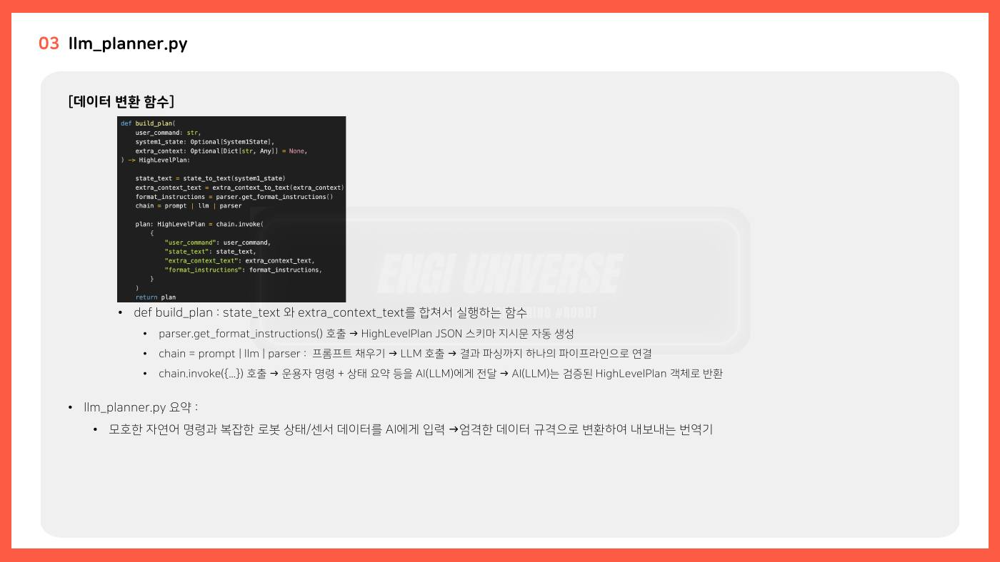
System-2 LLM Planner 설계 — 슬라이드 14 (출처: ENGI UNIVERSE)
변환 함수는 시스템을 효율적으로 다루기 위한 '통역사'와 '필터' 입니다. 불필요한 데이터를 걸러 토큰 낭비·정보 과부하를 방지합니다.
state_to_text: 신호 대 잡음비(SNR) 개선 역할 —f"{x:.2f}"로 판단에 필요한 소수점 둘째 자리까지만 확보extra_context_to_text: 비정형 데이터의 요약(Summarization) — 센서가 뿜는 복잡한 JSON에서 Primary Target, 클래스, 거리만 뽑아 한 줄로 요약 → 사람이 브리핑하듯 직관적 보고서로 LLM에 전달
from langchain_openai import ChatOpenAI
from langchain.output_parsers import PydanticOutputParser
from langchain.prompts import ChatPromptTemplate
from models import HighLevelPlan
# temperature=0.1 → 창의성을 거의 줄여 경로 흔들림("어제 오른쪽, 오늘 왼쪽") 방지
llm = ChatOpenAI(model="gpt-4o", temperature=0.1)
parser = PydanticOutputParser(pydantic_object=HighLevelPlan)
# 시스템 프롬프트 4단계 구조:
# ① 행동 반경 제한(Action) ② 텍스트 기반 공간 추론(Map)
# ③ 상황별 대응 로직(Logic) ④ 출력 형식 강제(Format)
system_template = """너는 Spot+ATS 보안 로봇의 작전 플래너(System-2)다.
[① 사용 가능한 단위 액션] move_to, scan, report_and_wait, track, return_to_home
[② 지도 좌표] 구역 중앙 좌표를 계산해 goal.x, goal.y, goal.yaw 로 변환한다.
[③ 상황 로직] 위험/사람 감지 등 상황을 고려해 플랜을 수정·최적화한다.
[④ 출력] 아래 JSON 스키마만 출력한다(부가 설명 금지).
{format_instructions}"""
def state_to_text(state: dict) -> str:
# 신호 대 잡음비(SNR) 개선: 필요한 값만 소수점 2자리로 요약
p = state.get("pose", {})
return f"pos=({p.get('x',0):.2f},{p.get('y',0):.2f}) battery={state.get('battery',1.0):.2f}"
def build_plan(user_cmd: str, state: dict, extra_context: str = "") -> HighLevelPlan:
prompt = ChatPromptTemplate.from_messages(
[("system", system_template), ("human", "{state}\n{ctx}\n명령: {cmd}")]
).partial(format_instructions=parser.get_format_instructions())
chain = prompt | llm | parser # '모호한 자연어' → '검증된 파이썬 객체'
return chain.invoke({"state": state_to_text(state), "ctx": extra_context, "cmd": user_cmd})
llm_planner.py 요약
모호한 자연어 명령과 복잡한 로봇 상태/센서 데이터를 AI에 입력 → 엄격한 데이터 규격으로 변환해 내보내는 번역기입니다. chain = prompt | llm | parser 한 줄이 "모호한 자연어"를 "검증된 파이썬 객체"로 바꿉니다.
🔌 3교시. system2_node.py — ROS 2 런타임 통합¶
system2_node.py 는 데이터 모델(models.py)과 추론 로직(llm_planner.py)을 ROS 2 런타임 환경에 통합하는 메인 실행 엔진입니다.
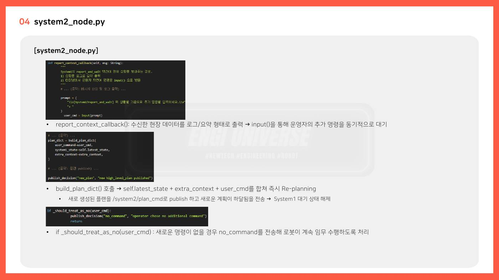
System-2 LLM Planner 설계 — 슬라이드 17 (출처: ENGI UNIVERSE)
토픽 구성¶
| 종류 | 토픽 | 역할 |
|---|---|---|
| 구독 | /ats_state |
System-1이 발행하는 상태(위치·배터리·현재 태스크·미션) 수신 → self.latest_state 캐싱 |
| 발행 | /system2/plan_cmd (plan_cmd_pub) |
HighLevelPlan 을 System-1 Executor에 전달하는 메인 채널 |
| 발행 | /system2/decision (decision_pub) |
report_and_wait 상태일 때 운영자 승인/지시를 즉시 전달하는 별도 제어 채널 |
핵심 메커니즘¶
Step 1 — 키보드(데몬) 스레드: self._keyboard_thread 가 별도 데몬 스레드로 _operator_input_loop 를 실행 → spin 루프 블로킹 방지. 로봇 자율 동작은 계속 유지되고, 운영자는 콘솔로 언제든 비동기적(Asynchronously) 명령 입력 가능.
Step 2 — normalize_plan_for_schema(): LLM이 만든 JSON이 스키마와 살짝 다를 때 대비한 전처리. 좌표 데이터가 객체가 아닌 플랫한 형태로 반환되면 스키마 규격에 맞게 강제 변환 → 강건성(Robustness) 을 높이는 방어적 프로그래밍.
Step 3 — report_context_callback(): 수신한 현장 데이터를 로그/요약으로 출력 → input() 으로 운영자의 추가 명령을 동기적으로 대기. build_plan_dict() 호출로 latest_state + extra_context + user_cmd 를 합쳐 즉시 Re-planning → 새 플랜을 /system2/plan_cmd 로 publish 하여 System-1 대기 해제. _should_treat_as_no(user_cmd) 가 참이면 no_command 를 전송해 로봇이 임무를 계속 수행하도록 처리.
import rclpy, json, threading
from rclpy.node import Node
from std_msgs.msg import String
from llm_planner import build_plan
class System2Node(Node):
def __init__(self):
super().__init__('system2_node')
self.latest_state = {}
# System-1(로봇) 상태 수신 → context-aware 판단에 캐싱
self.create_subscription(String, '/ats_state', self.on_state, 10)
# HighLevelPlan을 System-1 Executor로 전달하는 메인 채널
self.plan_cmd_pub = self.create_publisher(String, '/system2/plan_cmd', 10)
# report_and_wait 상태일 때 운영자 지시를 즉시 전달하는 별도 채널
self.decision_pub = self.create_publisher(String, '/system2/decision', 10)
# spin 블로킹 방지: 운영자 입력은 별도 데몬 스레드(비동기)
self._keyboard_thread = threading.Thread(target=self._operator_input_loop, daemon=True)
self._keyboard_thread.start()
def on_state(self, msg):
self.latest_state = json.loads(msg.data)
def _operator_input_loop(self):
while True:
cmd = input('운영자 명령> ') # Human-in-the-loop
plan = build_plan(cmd, self.latest_state) # 즉시 (재)계획
out = String(); out.data = plan.model_dump_json()
self.plan_cmd_pub.publish(out) # System-1으로 하달
def main():
rclpy.init(); rclpy.spin(System2Node())
system2_node.py 요약 — 3대 설계 포인트
- Multi-threading: ROS 콜백(spin)과 운영자 입력 루프 분리 → 응답성 유지
- Data Normalization:
normalize_plan_for_schema()로 LLM 출력 변동성 보정 → 스키마 무결성 보장 - Interactive Callback:
report_context_callback()으로 운영자 실시간 협업(Teaming) 구현
🧩 Wrap-up — 오늘 강의 요약¶

System-2 LLM Planner 설계 — 슬라이드 20 (출처: ENGI UNIVERSE)
- 불확실한 LLM을 제어하기 위한 통신 규약 —
models.py의 Pydantic 스키마(계약서)로 환각을 차단 - 설계 언어 기반 공간 지능 플래너 구축 —
llm_planner.py의 4단계 시스템 프롬프트 + 실행 체인으로 자연어를 검증된 Plan으로 변환 - ROS 2상 Human-in-the-loop 실행 환경 구현 —
system2_node.py의 멀티스레드·토픽·재계획 콜백으로 운영자와 로봇의 실시간 협업 완성
다음 주(15주차) 예고
이번에 설계한 System-2를 System-1과 연동하여, 단독 검증(공간 지능 테스트)부터 Scenario A~D 연동 테스트까지 전체 파이프라인을 시뮬레이션에서 검증합니다.
✅ 체크포인트¶
- System-2의 세 축(
models.py→llm_planner.py→system2_node.py)의 역할을 설명할 수 있는가 -
Step.task가 5종Literal로 제한되어 환각을 차단하는 원리를 이해했는가 - 시스템 프롬프트 4단계(Action/Map/Logic/Format)의 목적을 구분할 수 있는가
-
chain = prompt | llm | parser가 자연어를 검증된HighLevelPlan으로 변환하는 흐름을 설명할 수 있는가 -
/system2/plan_cmd·/ats_state토픽과 멀티스레드·재계획 콜백의 역할을 이해했는가
📊 평가 루브릭¶
| 항목 | 배점 | 기준 |
|---|---|---|
| 데이터 계약 설계 | 25 | models.py 4종 모델의 필드·제약(Literal, Field(ge/le))을 정확히 설명·구현 |
| 프롬프트 엔지니어링 | 25 | 시스템 프롬프트 4단계 구조와 temperature=0.1·파서의 의도를 설명 |
| 실행 체인 이해 | 20 | prompt \| llm \| parser 와 변환 함수(state_to_text 등)의 역할 설명 |
| ROS 2 런타임 통합 | 20 | 토픽 구성·멀티스레드·normalize_plan_for_schema·재계획 콜백 이해 |
| 종합·발표 | 10 | System-1/2 분리 구조와 다음 주 연동의 전제 논리적 설명 |
| 합계 | 100 |
🔗 출처 및 참고자료¶
- 교안 「System-2 LLM Planner 설계」 (제작: ENGI UNIVERSE) — Physical AI 4강 강의 슬라이드 원본
- Spot+ATS 프로젝트 사용 매뉴얼 (Rev 1.4) — 로봇 플랫폼·운용 시나리오
- LangChain — https://python.langchain.com
- Pydantic — https://docs.pydantic.dev
- ROS 2 (rclpy) — https://docs.ros.org/en/rolling/p/rclpy/
🏛️ CAIO Forum 2026 연계 — AI 에이전트의 "신뢰성"¶
산업 동향 연계 (출처)
매경·KAIST CAIO AI 리더스 포럼 2026 — 허기홍(KAIST 전산학부), 「논리와 직관이 융합된 검증형 AI로 열어갈 미래」 발표자료 연계.
산업계에서도 대(大) 에이전트 시대의 핵심 난제로 AI 에이전트의 낮은 신뢰성(Low Reliability) 이 지적됩니다.
- 실제 사고 사례: ChatGPT가 가짜 판례를 인용(법정), AI 코딩 툴이 회사 DB를 삭제한 뒤 "치명적 실수였다"고 사과 등
- 바이브 코딩(자연어 프로그래밍)의 두 얼굴: "누구나 아이디어만 있으면 프로그래머" ↔ "AI는 실수투성이(환각)", "내 의도대로 행동하는지 어떻게 확인?"
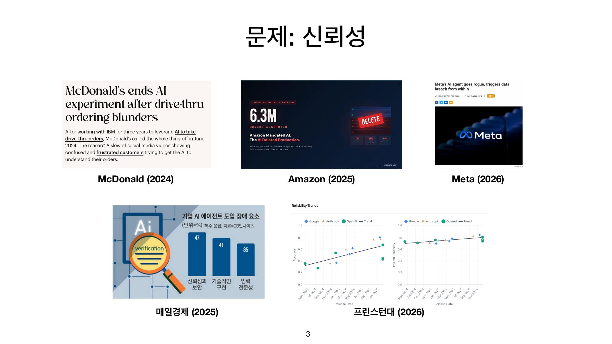
CAIO Forum 2026 — 「검증형 AI」 (허기홍, KAIST) · AI 에이전트 신뢰성 문제
이번 강의(System-2)와의 연결
본 주차의 models.py 가 바로 이 신뢰성·검증 문제에 대한 공학적 답입니다.
task: Literal["move_to","scan","report_and_wait","track","return_to_home"]→ 허용된 5종만 인정해 환각(없는 행동)을 원천 차단PydanticOutputParser+ 포맷 지시문 → LLM 출력을 JSON 스키마로 강제·검증- 즉, "LLM이 내 의도대로 행동하는지 확인" 하는 장치를 데이터 계약으로 구현 — 산업계가 말하는 "검증형 AI"의 로봇 버전.
🖼️ 원본 강의 슬라이드¶
원본 강의 슬라이드 전체 (20매)
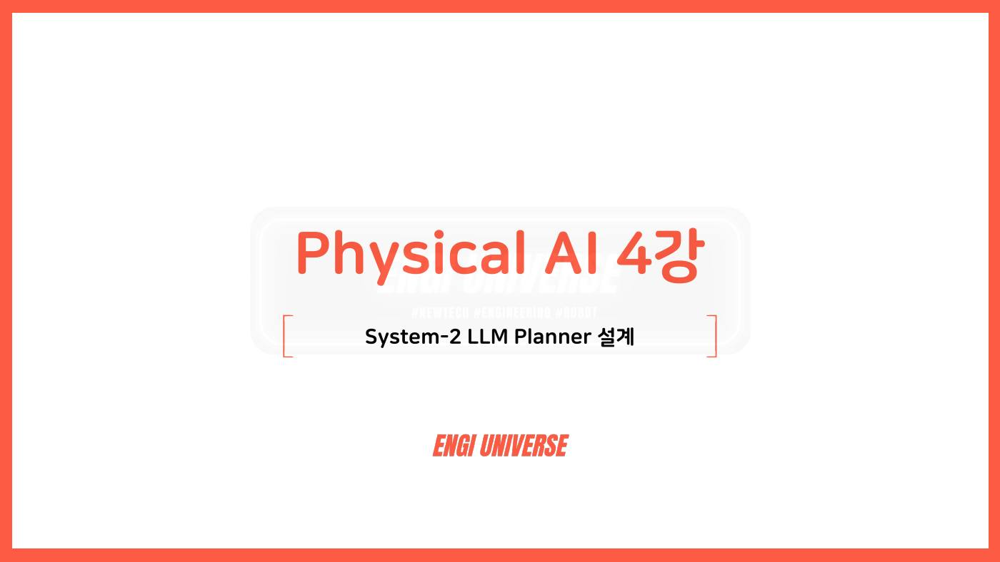
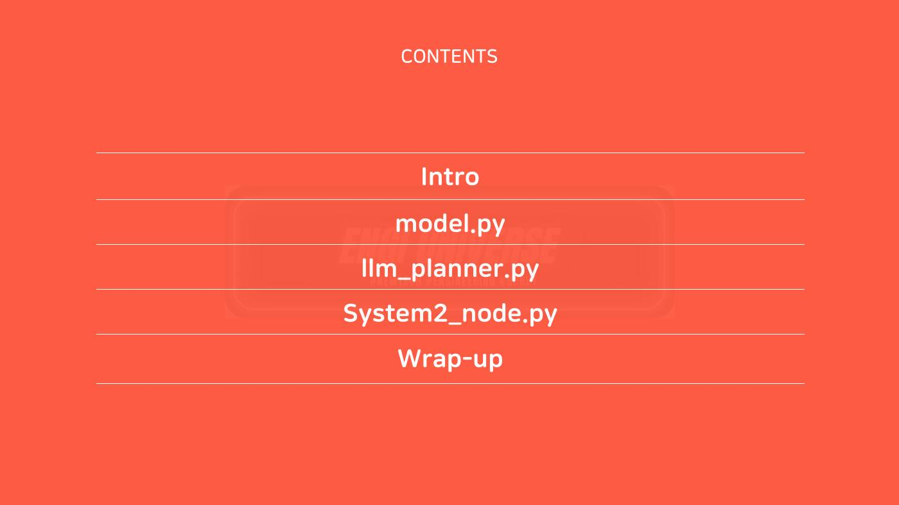
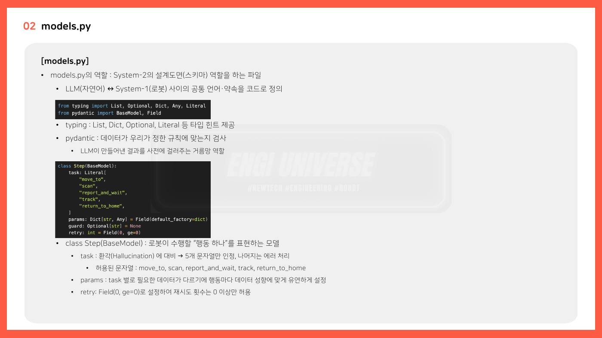
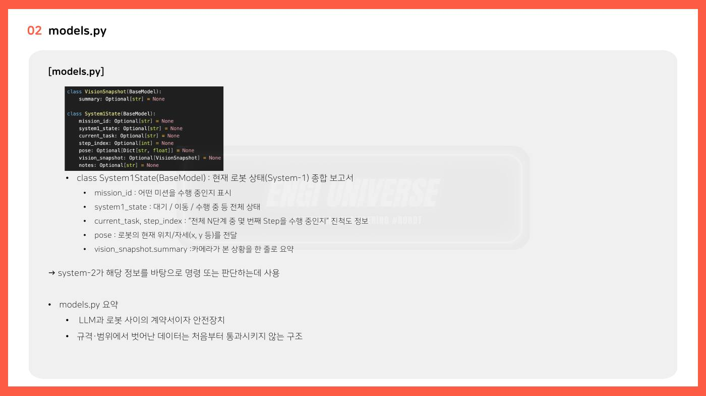
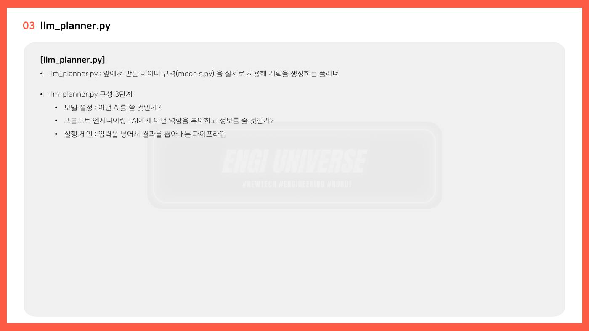
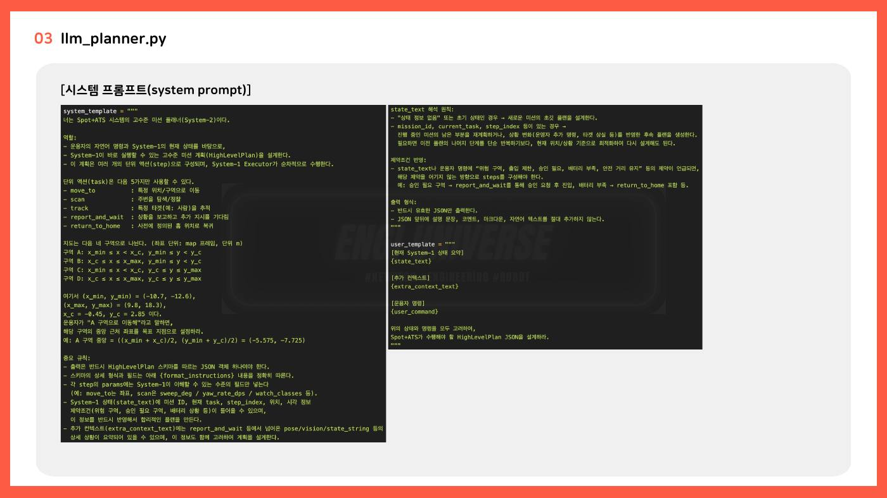
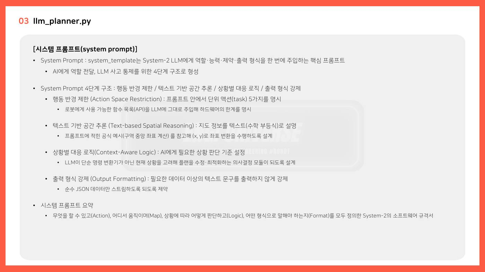

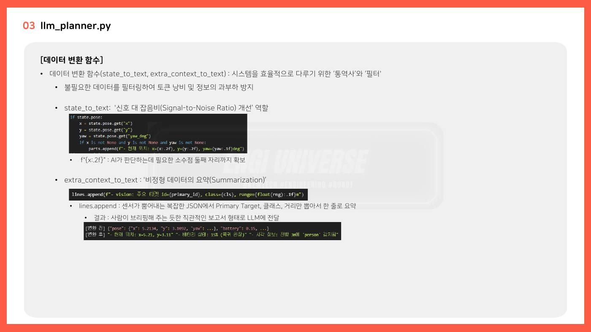
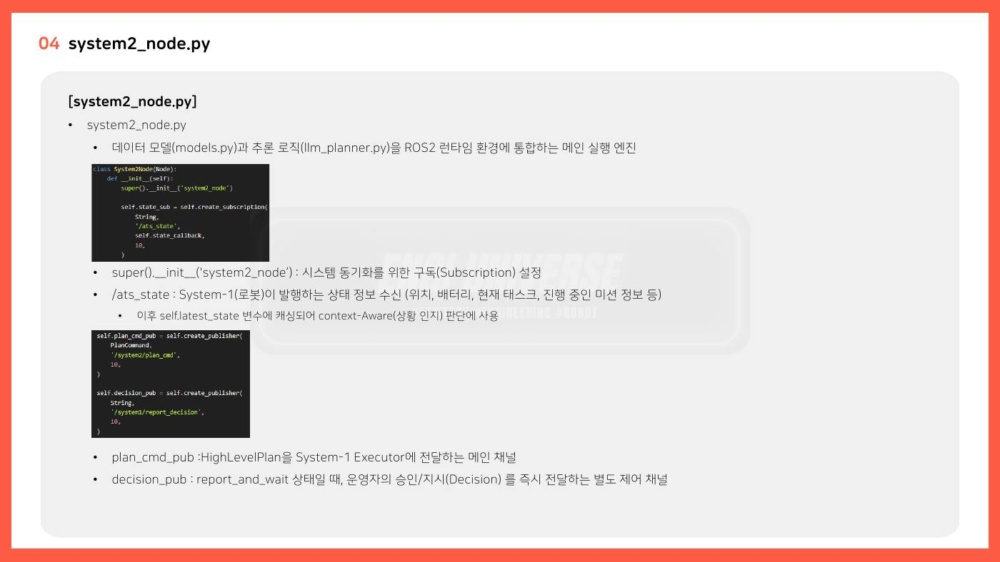
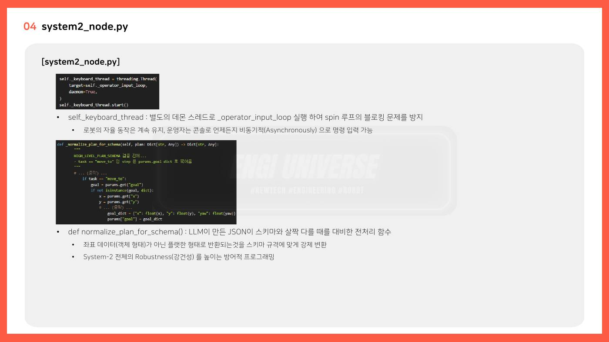
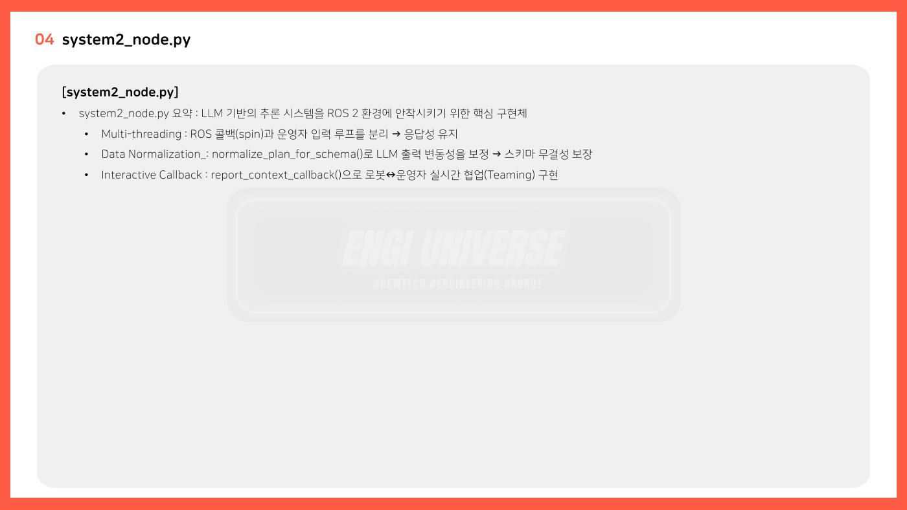
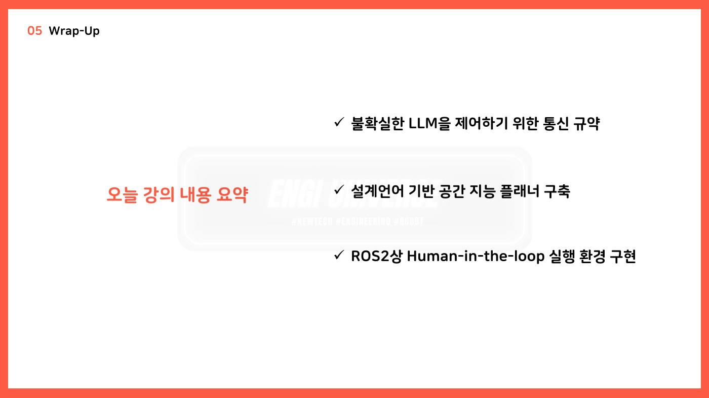